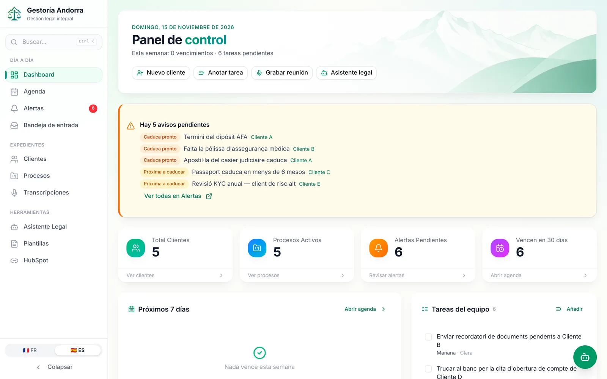

Un CRM que sap què és un KYC, un portal perquè el client pugi els documents que falten, i agents d'IA que treballen sobre les teves dades, no en un xat a part. Tot amb la Llei 29/2021 integrada.

A la gestoria on treballo, cada expedient d'inversió estrangera passa per vint passos, tres administracions i una pila de documents que caduquen. Durant anys això s'ha portat amb Excel i carpetes compartides. Vaig construir el CRM que fem servir ara, i és el que t'ofereixo: adaptat al teu despatx, no una plantilla.
Els agents d'IA són la segona capa: un assistent que respon amb els teus documents (RAG) i agents que classifiquen el correu, preparen checklists i avisen del que caduca. Connectats al CRM, amb registre de tot el que fan, i sense que cap dada surti d'Europa.
Gestories, assessories, despatxos d'advocats, administradors de finques, immobiliàries i qualsevol pime d'Andorra que gestioni expedients, documents i terminis. Si avui ho portes amb Excel, carpetes i correu, és per a tu.
15 minuts per WhatsApp o videotrucada. M'expliques què et fa perdre temps i et dic si ho puc fer.
Una pàgina: què faré, quant trigaré i quant costarà. Sense lletra petita.
Entregues setmanals perquè ho vegis créixer i canviïs el que calgui a temps.
Formació a l'equip, codi i accessos teus, i jo a un missatge de distància.
Preus orientatius; el pressupost real depèn del que tinguis ja i del que vulguis. Sense llicències mensuals per usuari: el programari és teu.
Per respondre preguntes de clients i equip amb fonts.
L'eina central del despatx, adaptada als teus tràmits.
El despatx amb empleats digitals que treballen sols.
És teu: codi, base de dades i accessos. Pagues el desenvolupament i, si vols, un manteniment mensual. Si un dia vols marxar, t'ho emportes tot.
A servidors a Europa (o a Andorra si ho prefereixes). Els models d'IA no s'entrenen amb les teves dades i cada consulta queda registrada.
Un assistent RAG, dues o tres setmanes. Un CRM complet, de sis a deu setmanes amb entregues cada setmana perquè el vagis fent servir.
Ho connectem. El CRM d'expedients fa el que HubSpot no fa (tràmits, KYC, venciments) i HubSpot continua fent el que fa bé (contactes, correu, pipeline).
Un missatge de WhatsApp és suficient. Et dic en una resposta si ho puc arreglar, quant trigaria i quant costaria. Si no sóc la persona adequada, també t'ho dic.
+376 601 249 · Andorra